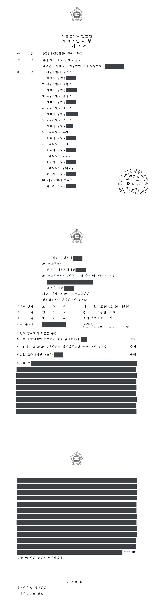

수분양자 700여 명이 제기한 도시개발사업 이주대책 생활기본시설 비용 반환 청구소송 (1·2심)
서울중앙지방법원 2014가합508899 · 서울고등법원 2017나2057852 · 담당변호사 부효준
판결문



사건의 요지
도로·공원·주차장·학교 등 여러 공익사업으로 주택이 수용되어 도시개발사업지구 안 아파트를 특별공급받은 수분양자 739명이, 각 사업의 시행자인 자치구 22곳과 광역지방자치단체(교육감 소관 포함), 주택을 공급한 공사 등 피고 25곳을 상대로 분양대금에 포함된 생활기본시설 설치비용의 반환을 구한 대규모 다수 당사자 소송입니다. 부효준 변호사는 피고 24곳을 대리하여 3년 넘게 1심을 수행하였고, 원고별 거주요건·기판력·반환의무 주체를 다툰 결과 원고 106명이 소송 도중 청구를 포기하였으며, 2017년 8월 1심 판결은 남은 원고 629명 가운데 205명의 청구만 받아들이고 424명의 청구는 각하하거나 받아들이지 않았습니다. 원고 27명과 관련된 항소심은 2020년 3월 원고 4명에 대한 1심의 인용 부분을 취소하고 나머지 부분은 1심의 결론을 유지하였습니다.
사건의 주요 내용
한 광역지방자치단체 안에서 도로 개설, 공영주차장 건설, 공원·녹지 조성, 학교 신축 등 여러 공익사업에 주택이나 토지가 편입된 사람들은, 각 사업의 시행자인 자치구·광역지방자치단체·교육청의 이주대책으로 산하 공사가 조성한 도시개발사업지구(아파트 2,331세대)의 아파트를 특별공급받았습니다. 그 분양대금은 일반분양과 같은 금액으로 정해져, 구 토지보상법 제78조 제4항에 따라 사업시행자가 부담하여야 할 생활기본시설 설치비용이 포함되어 있었습니다.
2014년 봄 수분양자와 분양권 양수인 739명은 한 건의 소송으로, 각 공익사업의 시행자인 자치구 22곳을 주위적 피고로, 광역지방자치단체를 예비적 피고로 하고, 교육감 소관의 광역지방자치단체와 주택을 공급한 공사까지 피고 25곳을 상대로 생활기본시설 설치비용 상당액의 반환을 청구하였습니다. 원고마다 편입된 공익사업과 공람공고일·사업인정고시일·협의매수일, 거주 이력이 달라 수백 건의 서증이 제출되었고 변론은 3년 넘게 이어졌습니다. 부효준 변호사는 교육감 소관 피고를 뺀 피고 24곳을 대리하였습니다.
피고들이 원고별로 법령상 이주대책대상자 요건과 전소 확정판결의 기판력, 반환의무 주체를 다투자, 원고 106명은 2016년 12월 변론기일에 청구를 포기하였고(포기조서), 400명이 넘는 원고는 자신이 법령상 이주대책대상자가 아님을 자인하면서 청구금액을 1인당 20만 원으로 줄였습니다. 1심 판결문은 원고 목록과 부당이득금표 등 별지를 합하여 128면에 이릅니다.
2017년 8월 1심은 남은 원고 629명 가운데 205명에 대하여만 1인당 약 1,300만~4,090만 원(합계 약 53억 6,000만 원)의 반환을 명하였고, 그중 65명은 자치구에 대한 주위적 청구가 받아들여지지 않아 광역지방자치단체에 대한 예비적 청구만 인용되었습니다. 원고 4명의 소는 각하되었고 420명의 청구는 받아들여지지 않았습니다. 원고 27명과 관련하여 피고들과 원고 일부가 항소한 항소심은 2020년 3월 원고 4명에 대한 1심의 인용 부분을 취소하고, 다른 원고 4명에 대하여는 반환의무자를 자치구로 바꾸었으며, 나머지 19명에 대한 피고들의 항소는 받아들이지 않았습니다. 주택을 공급한 공사 등에 대한 청구 부분은 항소심에서 화해권고결정으로 분리확정되었습니다.
쟁점
- 같은 청구원인으로 패소 확정판결·화해권고결정을 받거나 청구를 포기한 원고의 소를 각하할지, 아니면 기판력에 따라 청구를 받아들이지 않을지
- 원고 629명 가운데 누가 구 토지보상법 시행령 제40조 제3항의 법정 이주대책대상자인지(계속 거주 요건, 1989년 1월 24일 이전 무허가건축물 소유자의 예외, 노후 시민아파트 녹지조성사업의 공익사업 해당 여부)
- 자치구와 광역지방자치단체 가운데 누가 생활기본시설 설치비용의 반환의무자인지, 교육감 소관 학교 신축사업에서 반환의무자는 누구인지
- 생활기본시설 설치비용의 범위(도로용지비·기반시설 설치비·조성비·간접비)와 유상공급면적 1㎡당 비용의 산정, 지연이자의 기산점
- (항소심) 분양권 양수인의 반환청구권과 협의계약 체결일 당일 이주한 경우의 거주요건
원고의 주장
- 원고들은 각 공익사업으로 주거용 건축물 등을 제공한 법령상 이주대책대상자이거나 그로부터 분양계약상 지위를 넘겨받은 사람이므로, 특별공급 아파트의 분양대금에 포함된 생활기본시설 설치비용은 강행규정인 구 토지보상법 제78조 제4항에 위배되어 무효이고 사업시행자가 이를 부당이득으로 반환하여야 한다고 주장하였습니다.
- 주택을 직접 공급한 것은 산하 공사이지만 이주대책 수립 의무를 지는 사업시행자가 생활기본시설 설치비용의 지출을 면하였으므로, 각 사업의 사업시행자인 자치구(주위적)와 광역지방자치단체(예비적)가 소장 부본 송달일부터의 이자를 붙여 반환할 의무가 있다고 주장하였습니다.
부효준 변호사의 주장
- 같은 청구원인으로 이미 다른 법원에서 패소 확정판결이나 화해권고결정을 받았거나 청구를 포기한 원고 7명의 소는 기판력에 저촉되어 부적법하다고 본안전항변을 하였고, 피고가 아닌 자치구를 상대로 청구취지를 변경한 원고의 소도 부적법하다고 지적하였습니다.
- 구 토지보상법 시행령 제40조 제3항에 따라 공람공고일 또는 사업인정고시일부터 계약체결일·수용재결일까지 해당 건축물에 계속 거주하지 않은 소유자(미거주 소유자)와 무허가건축물 소유자는 법령상 이주대책대상자가 아니고, 사업시행자가 이들에게 베푼 특별공급은 시혜적인 것이어서 생활기본시설 설치비용을 돌려줄 의무가 없다고 주장하면서, 원고별 주민등록과 거주 자료를 일일이 대조하여 요건을 갖추지 못한 원고들을 가려냈습니다.
- 원고들이 주위적 피고로 삼은 자치구가 해당 공익사업의 사업시행자로 고시되지 않은 경우(65명)에는 자치구가 반환의무자가 될 수 없고, 노후 시민아파트를 철거한 녹지조성사업은 재난 예방을 위한 정리사업일 뿐 구 토지보상법상 공익사업이 아니며, 생활기본시설 설치비용을 산정할 때 존치부지인 소로 4개 노선(3,853㎡)의 면적은 도로용지에서 빼야 한다고 주장하였습니다.
- 항소심에서는 분양권 양수인이 공급자인 공사의 승낙만 받고 계약상 지위를 넘겨받았을 뿐이어서 사업시행자에 대한 부당이득반환채권까지 양수한 것이 아니고, 협의계약 체결일 당일 이주한 양도인은 '계약체결일까지 계속 거주'한 것이 아니라고 다투었습니다.
법원의 판단
1심은 다른 법원의 확정판결·화해권고결정이 있는 원고 3명과 피고가 아닌 자치구를 상대로 청구를 변경한 원고 1명의 소를 각하하였습니다. 반면 패소 확정판결을 받았거나 청구를 포기한 나머지 원고 4명에 대하여는 전소 판결의 기판력 때문에 모순되는 판단을 할 수 없으므로 소를 각하할 것이 아니라 청구를 받아들이지 않아야 한다고 보아 그 청구를 배척하였고, 분양대금에 포함된 역 설치대금의 반환을 구하였던 전소와 이 사건 청구는 같은 청구가 아니라고 보았습니다.
법정 이주대책대상자의 범위에 관하여는 대법원 판례(2014. 9. 4. 선고 2012다109811 판결)에 따라 미거주 소유자 등에게 베푼 이주대책은 시혜적인 것이어서 생활기본시설 설치의무가 없다는 법리를 전제로, 다툼이 없는 170명과 거주 사실이 증명된 31명, 1989년 1월 24일 이전 무허가건축물 소유자 4명만 법정 대상자로 인정하였습니다. 무허가건축물 소유자이면서 예외 사유를 증명하지 못한 4명, 거주요건의 예외를 주장한 1명, 양도인의 계속 거주가 증명되지 않은 양수인 2명의 청구는 받아들이지 않았고, 400명이 넘는 원고는 스스로 대상자가 아님을 자인하였다고 보아 명목상의 청구까지 모두 배척하였습니다.
노후 시민아파트 녹지조성사업은 실시계획 인가·고시를 거쳐 협의취득 절차를 밟은 도시계획시설사업이므로 공익사업에 해당한다고 보았습니다. 반환의무자에 관하여는, 일반 시민인 권리자가 자치사무와 위임사무를 구분하여 실질적 사업자를 피고로 고르기를 기대하기 어렵다는 이유로 대외적으로 사업시행자로 고시된 당사자가 반환의무를 진다고 하여, 광역지방자치단체가 사업시행자로 고시된 65명의 사업에서는 주위적 피고인 자치구가 아니라 예비적 피고인 광역지방자치단체가 의무자가 되었고, 교육감 소관 학교 신축사업에서는 이주대책 신청을 자치구가 대행하였더라도 사업시행자인 교육감 소관 광역지방자치단체가 의무자라고 하였습니다.
부당이득액은 '생활기본시설 설치비용 합계 × 원고가 분양받은 아파트의 대지면적 ÷ 유상공급면적'의 산식으로 산정하였습니다. 도로용지비와 그 자본비용, 전기·통신시설 지중화비, 하수처리부담금, 우수·오수·상수도 공사비, 도로포장공사비, 전기통신 도급·이설·감리비와 이에 따른 직접인건비·판매비·일반관리비를 합한 약 1,933억 5,000만 원을 유상공급면적 461,165㎡로 나눈 1㎡당 419,264원에 대지면적을 곱하도록 하였습니다. 개발계획 변경으로 늘어난 도로 면적은 분양대금 산정에 반영되지 않았다는 이유로 설치비용에 넣지 않았으나, 존치부지 3,853㎡를 빼자는 피고들의 주장은 받아들이지 않았고, 지연이자는 소장 부본 송달일부터 연 5%, 청구취지 변경신청서 송달일 다음날부터 연 15%로 정하였습니다.
원고 27명 관련 항소심은 2020년 3월, 건물을 전세로 내주고 거주하지 않았거나 협의매수일 전에 전출한 원고와 협의계약 체결일 당일 이주한 양도인으로부터 분양권을 양수한 원고 등 4명에 대한 1심의 인용 부분을 취소하여 청구를 받아들이지 않았고, 다른 4명에 대하여는 사업시행자로 고시된 자치구가 반환의무를 진다고 보아 반환의무자를 바꾸었으며, 분양권 양수인도 사업시행자에게 반환을 청구할 수 있다고 보아 나머지 19명에 대한 피고들의 항소는 받아들이지 않았습니다.
사업시행자가 위 법령에서 정한 이주대책대상자의 범위를 확대하는 기준을 수립하여 실시하는 것은 허용되나(대법원 2009. 9. 24. 선고 2009두9819 판결 등 참조), 사업시행자가 구 토지보상법 제78조 제1항, 구 토지보상법 시행령 제40조 제3항이 정한 이주대책대상자의 범위를 넘어 미거주 소유자 등까지 이주대책대상자에 포함시킨다고 하더라도, 법령에서 정한 이주대책대상자(이하 ‘법정 이주대책대상자’라 한다)가 아닌 미거주 소유자 등에게 제공하는 이주대책은 법령에 의한 의무로서가 아니라 시혜적인 것으로 볼 것이므로, 사업시행자가 이러한 미거주 소유자 등에 대하여도 토지보상법 제78조 제4항에 따라 생활기본시설을 설치하여 줄 의무를 부담한다고 볼 수는 없다(대법원 2014. 9. 4. 선고 2012다109811 판결 등 참조).
서울중앙지방법원 2014가합508899 판결 이유 '4. 나. 1)'(사업시행자가 생활기본시설 설치의무를 부담하는 이주대책대상자의 범위)
생활기본시설 설치비용을 부당이득으로 반환청구할 때 일반 시민인 그 권리자가 관련 법령과 조례 등에 관한 전문적 지식과 행정절차에 대한 이해를 바탕으로 자치사무인지 위임사무인지를 구분하여 해당되는 실질적 사업자를 피고로 선택하기를 기대하기는 어렵다. 따라서 예비적 피고 광역지방자치단체와 주위적 피고 자치구들이 내부적으로 자치사무와 위임사무 중 어느 것인지를 밝혀 상호 구상권을 행사할 수 있는지 여부는 별론으로 하고, 적어도 대외적으로는 사업시행자로 고시된 당사자가 부당이득반환의무를 부담한다고 봄이 타당하다.
서울중앙지방법원 2014가합508899 판결 이유 '4. 다. 1)'(부당이득반환의무의 주체)
사업시행자의 이주대책 수립ㆍ실시의무를 정하고 있는 구 토지보상법 제78조 제1항과 그 이주대책의 내용에 관하여 규정하고 있는 같은 법 제78조 제4항 본문은 당사자의 합의나 사업시행자의 재량에 의하여 그 적용을 배제할 수 없는 강행법규이다. 따라서 만일 사업시행자의 알선에 의하여 다른 공급자가 주택을 공급한 경우에 이주대책대상자들과 사업시행자의 알선에 의한 공급자 사이에 체결된 주택에 관한 특별공급계약에서 구 토지보상법 제78조 제4항에 규정된 생활기본시설 설치비용을 분양대금에 포함시킴으로써 이주대책대상자들이 생활기본시설 설치비용까지 사업시행자 등에게 지급하게 되었다면, 사업시행자가 그 규정에 따라 부담하여야 할 생활기본시설 설치비용에 해당하는 금액의 지출을 면하게 되어, 결국 사업시행자는 법률상 원인 없이 생활기본시설 설치비용 상당의 이익을 얻고 그로 인하여 이주대책대상자들이 같은 금액 상당의 손해를 입게 된 것이므로, 사업시행자는 이주대책대상자들에게 그 금액을 부당이득으로 반환할 의무가 있다[대법원 2011. 6. 23. 선고 2007다63089, 63096(병합) 전원합의체 판결, 대법원 2015. 6. 11. 선고 2012다58920 판결 등 참조].
서울고등법원 2017나2057852 판결 이유 '3. 다. 2) 관련 법리'(분양권을 양수한 원고들의 청구권)
※ 판결 이유 가운데 이 사건의 판단 기준이 된 부분을 그대로 옮긴 것으로, 당사자 이름 등은 가렸습니다.
이 사건이 보여 주는 것
이 사건은 수분양자 739명과 피고 25곳이 얽힌 다수 당사자 소송으로, 원고 한 사람 한 사람에 대하여 편입된 공익사업과 기준일, 거주 이력, 전소의 존재, 분양권 양도 여부를 따로 심리하여야 했습니다. 피고 측이 원고별 자료를 정리하여 요건을 갖추지 못한 원고들을 가려내자 106명이 청구를 포기하고 400명 넘게 사실상 청구를 접었으며, 실제로 반환을 받은 사람은 전체의 3분의 1에 못 미치는 205명에 그쳤습니다. 다수 당사자 소송에서는 본안전항변과 본안 항변을 원고별로 나누어 제출하는 작업이 결론을 좌우합니다.
법리 면에서는 ① 법령상 이주대책대상자가 아닌 사람에게 베푼 특별공급은 시혜적인 것이어서 생활기본시설 설치비용을 돌려줄 의무가 없고, ② 반환의무자는 자치사무·위임사무의 구분이 아니라 대외적으로 사업시행자로 고시된 기관이며, ③ 설치비용은 총사업비 자료를 바탕으로 유상공급면적 1㎡당 금액을 산출하여 대지면적에 곱하는 방식으로 정해진다는 점이 확인되었습니다. 협의계약 체결일 당일 이주한 경우까지 '계속 거주'로 인정되지 않을 수 있으므로, 이주대책대상자는 협의계약이나 수용재결이 끝난 뒤에 전출하여야 합니다.
관련 법령구 공익사업을 위한 토지 등의 취득 및 보상에 관한 법률(2009. 4. 1. 법률 제9595호로 개정되기 전의 것) 제2조 제2호·제3호, 제4조 제7호, 제22조, 제78조 제1항·제4항 · 구 공익사업법 시행령 제40조 제2항·제3항, 부칙(2002. 12. 30.) 제6조 · 구 국토의 계획 및 이용에 관한 법률 제88조, 제95조, 제96조 · 지방자치법 제10조 제3항 · 민사소송법 제249조 제1항 · 민법 제159조, 제741조 · 소송촉진 등에 관한 특례법 제3조
관련 단어이주대책대상자생활기본시설 설치비용부당이득반환다수 당사자 소송특별공급 아파트분양권 양수인거주요건공람공고일협의매수일기판력청구 포기반환의무 주체사업시행자 고시지방자치단체 대리
비슷한 처분을 받으셨다면
행정처분은 처분이 있음을 안 날부터 90일 이내에 행정심판이나 취소소송으로 다투어야 하고, 기간이 지나면 돌이킬 수 없는 처분은 집행정지를 서둘러야 합니다. 처분서를 받은 날짜부터 확인해 드립니다.